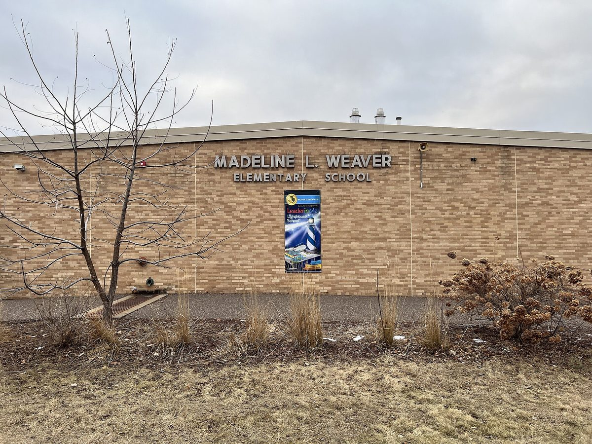

미국 미네소타 태양광 학교 연말 400곳 넘는다…학교 태양광 보조금 시작한 2022년 약 190곳의 두 배 이상

주 보조금 5년 동안 3,200만 달러 넘게 지원…행사 연 메이플우드 초등학교는 전기료 해마다 2만2,000달러 줄여, 주 전체 학교 20년간 4,600만 달러 절감 추산
미국 미네소타주의 태양광 발전 학교가 올해 말 400곳을 넘어설 전망이다. 주 정부가 2022년 학교 태양광 보조금 사업 '솔라 포 스쿨스(Solar for Schools)'를 시작할 때 약 190곳이던 태양광 학교가 두 배 이상으로 늘어나는 것으로, 주 상무부는 미네소타가 학교 태양광 수에서 전국 7위라고 밝혔다. 다섯 해째를 맞는 이 사업은 지금까지 3,200만 달러가 넘는 보조금을 지원했고, 주 상무부는 그 규모를 약 3,100가구가 1년 동안 쓰는 전기에 해당한다고 계산했으며, 200번째 보조금은 2027년 초에 나간다. 주 상무부와 제622학군은 22일 오전 태양광 학교 가운데 한 곳인 메이플우드의 저스티스 앨런 페이지 초등학교(Justice Alan Page Elementary)에서 행사를 열었고, 크리스틴 투치 오소리오(Christine Tucci Osorio) 교육감은 이 학교 태양광이 전기료를 해마다 2만2,000달러 줄여 준다며 학군의 모든 초등학교 4학년 과학 수업에 태양광 단원을 넣었다고 설명했다. 행사에서는 주 전체 학교가 20년 동안 아낄 전기료가 4,600만 달러에 이른다는 추산도 나왔다. 리사 폴리시(Lissa Pawlisch) 주 상무부 차관보는 "운영비가 줄어드는 것을 직접 볼 수 있다"며, 이를 지켜본 다른 학교들이 보조금에만 기대지 않고 스스로 태양광에 투자하는 길을 생각하게 될 것이라고 말했다.
시민에너지 관점
학교 한 곳이 해마다 2만2,000달러를 아끼고 주 전체로는 20년간 4,600만 달러가 절감된다는 숫자는, 공공건물 지붕이 그대로 공공 재정을 덜어 주는 발전소가 될 수 있음을 보여 준다. 학교가 설비 관리와 안전까지 떠안기 어렵다는 우려가 있을 수 있지만, 미네소타처럼 보조금으로 길을 열고 수업과 묶으면 태양광은 학교의 짐이 아니라 아이들이 매일 보는 교재가 된다. 여기서 한 걸음 더 나아가 학부모와 지역 주민이 출자한 시민 발전 조직이 학교 지붕의 주인이 되면, 학교는 싼 전기를 얻고 주민은 수익을 나누며 에너지 전환이 동네의 일이 된다. 국내 교육청과 지자체도 학교 지붕을 지역 시민 발전 조직에 열고, 절감액과 수익이 교육과 지역으로 돌아가는 구조부터 만들어야 한다.
출처: CBS Minnesota 2026-10-22 Frankie McLister 원문 보기
米ミネソタ州、太陽光発電の学校が年末に400校超えへ…学校太陽光補助金を始めた2022年の約190校から倍以上に
州補助金は5年で3,200万ドル超…行事を開いたメープルウッドの小学校は電気代を年2万2,000ドル削減、州全体の学校で20年間に4,600万ドル節約の見通し
米ミネソタ州で太陽光発電を備えた学校が、今年末までに400校を超える見通しだ。州が2022年に学校向け太陽光補助金事業「ソーラー・フォー・スクールズ（Solar for Schools）」を始めた当時に約190校だった太陽光の学校が倍以上に増えることになり、州商務省はミネソタが学校の太陽光の数で全米7位だとしている。5年目を迎えるこの事業はこれまでに3,200万ドルを超える補助金を出しており、州商務省はその規模を約3,100世帯の年間電力使用量に相当すると試算した。200件目の補助金は2027年初めに交付される。州商務省と第622学区は22日午前、太陽光の学校の一つであるメープルウッドのジャスティス・アラン・ペイジ小学校（Justice Alan Page Elementary）で行事を開き、クリスティン・トゥッチ・オソリオ（Christine Tucci Osorio）教育長は、同校の太陽光が電気代を毎年2万2,000ドル減らしているとし、学区内のすべての小学校で4年生の理科に太陽光の単元を加えたと説明した。行事では、州全体の学校が20年間で節約する電気代が4,600万ドルに上るとの試算も示された。リサ・ポーリッシュ（Lissa Pawlisch）州商務省次官補は「運営費が減るのを自分の目で見られる」と述べ、それを見たほかの学校が補助金だけに頼らず、自ら太陽光に投資する道を考えるようになるだろうと語った。
市民エネルギーの視点
1校で毎年2万2,000ドル、州全体で20年間に4,600万ドルを節約するという数字は、公共建築物の屋根がそのまま公共財政の負担を軽くする発電所になりうることを示している。学校が設備の管理や安全まで抱え込むのは難しいという懸念もありうるが、ミネソタのように補助金で道を開き授業と結びつければ、太陽光は学校の重荷ではなく、子どもたちが毎日目にする教材になる。さらに一歩進めて、保護者や地域住民が出資した市民発電組織が学校の屋根の持ち主になれば、学校は安い電気を得て、住民は収益を分かち合い、エネルギー転換が地域の仕事になる。韓国の教育庁や自治体も、学校の屋根を地域の市民発電組織に開き、節約分と収益が教育と地域に戻る仕組みづくりから始めるべきだ。
出典: CBS Minnesota 2026-10-22 Frankie McLister 原文を読む
美国明尼苏达州光伏学校年底将超过400所…比2022年启动学校光伏补助时的约190所增加一倍以上
州补助五年来发放逾3,200万美元…举办活动的枫木市小学每年节省电费2万2,000美元，全州学校20年预计节省4,600万美元
美国明尼苏达州安装光伏发电的学校预计到今年年底将超过400所。州政府2022年启动学校光伏补助项目“Solar for Schools”时，光伏学校约有190所，如今将增加一倍以上；州商务部表示，明尼苏达州的学校光伏数量位居全美第七。这一已进入第五年的项目迄今发放补助超过3,200万美元，州商务部估算其规模相当于约3,100户家庭一年的用电量，第200笔补助将于2027年初发放。州商务部和第622学区22日上午在光伏学校之一、位于枫木市（Maplewood）的Justice Alan Page小学举行活动，学区总监Christine Tucci Osorio介绍说，该校的光伏每年为学校节省电费2万2,000美元，学区还在所有小学四年级科学课中加入了光伏单元。活动中还提出，全州学校20年内节省的电费将达4,600万美元。州商务部助理专员Lissa Pawlisch表示，“大家能亲眼看到运营成本的节省”，她认为其他学校看到这些之后，会考虑不只依赖补助、自行投资光伏。
市民能源视角
一所学校每年节省2万2,000美元、全州学校20年节省4,600万美元，这些数字说明公共建筑的屋顶本身就可以成为减轻公共财政负担的电站。有人可能担心学校难以承担设备管理和安全责任，但像明尼苏达州那样用补助打开通道、并与课堂教学结合，光伏就不是学校的负担，而是孩子们每天都能看到的教材。再进一步，如果由家长和当地居民出资的市民发电组织成为学校屋顶的主人，学校能用上便宜的电，居民能分享收益，能源转型也就成了社区自己的事。韩国的教育厅和地方政府也应把学校屋顶向本地市民发电组织开放，先建立让节省的电费和收益回到教育和社区的机制。
来源: CBS Minnesota 2026-10-22 Frankie McLister 查看原文
Minnesota set to pass 400 solar-powered schools by year-end, more than double the roughly 190 when its school solar grants began in 2022
State grants top 32 million dollars over five years; the Maplewood elementary school that hosted the event saves 22,000 dollars a year on power, and schools statewide are put at 46 million dollars in savings over 20 years
The number of solar-powered schools in the US state of Minnesota is expected to pass 400 by the end of this year. That would be more than double the roughly 190 solar schools the state had when it launched its Solar for Schools grant programme in 2022, and the state Department of Commerce says Minnesota now ranks seventh in the nation. Now nearing its fifth year, the programme has awarded more than 32 million dollars in grants, which the department estimates is roughly equivalent to the annual electricity needs of about 3,100 homes, and its 200th grant will be awarded at the start of 2027. The department and School District 622 marked the milestone on the morning of 22 October at Justice Alan Page Elementary in Maplewood, one of the solar schools, where Superintendent Christine Tucci Osorio said the school's array cuts its electricity bill by 22,000 dollars a year and that the district has added a solar unit to fourth-grade science at all of its elementary schools. Officials at the event also pointed to 46 million dollars in electricity savings over 20 years for schools across the state. Lissa Pawlisch, an assistant commissioner at the Department of Commerce, said "Folks can see the operational savings," adding that seeing them could encourage other schools to consider investing in solar themselves rather than relying only on grants.
Citizen Energy View
Savings of 22,000 dollars a year at a single school and 46 million dollars over 20 years statewide show that public roofs can become power plants that ease the burden on public budgets. Some may worry that schools cannot take on the upkeep and safety of the equipment, but when grants open the way and the panels are tied into lessons, as in Minnesota, solar becomes not a burden but a teaching tool pupils see every day. Going a step further, if citizen energy groups funded by parents and local residents owned the panels on school roofs, schools would get cheaper power, residents would share in the returns and the energy transition would become the neighbourhood's own business. Korean education offices and local governments should open school roofs to local citizen energy groups and start by building arrangements that return savings and profits to education and the community.
Source: CBS Minnesota 2026-10-22 Frankie McLister Read the original